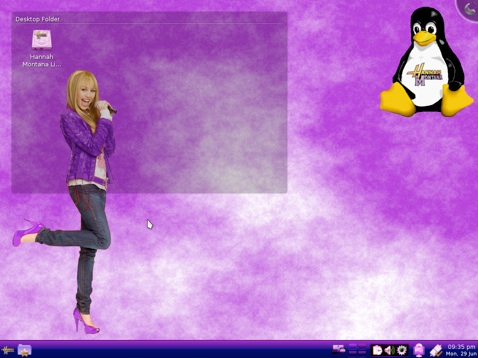

HannahMontana LINUX

Hannah Montana
Linux:
Meet Hannah Montana Linux or
HML for short. For more info, see the About page.
Hannah Montana Linux is a
unix-like Linux Operating System based on Kubuntu.
The Package Manager is Debian
apt.
The GUI is KDE 4.2 with Hannah
Montana themes
ScreenShots: HERE
Support: supporting computer architectures like AMD64, all (Intel X86).
Instalation: Just donwload the ISO from here Download and make it bootable with program like rufus or balena etcher. Make sure you have disabled secure boot in your bios.
Compatibility: Our os in compatible with almost every computer.You can just try it and you will see
System version: Curently we are running our system on KDE 4.2